Empowering partners to build integrations on Primer
A no-code platform that lets external partners build, test, and ship their payment integrations on Primer end-to-end.
Impact summary
On track to exceed the 2026 target of number of partners live on the Primer for Partners platform.
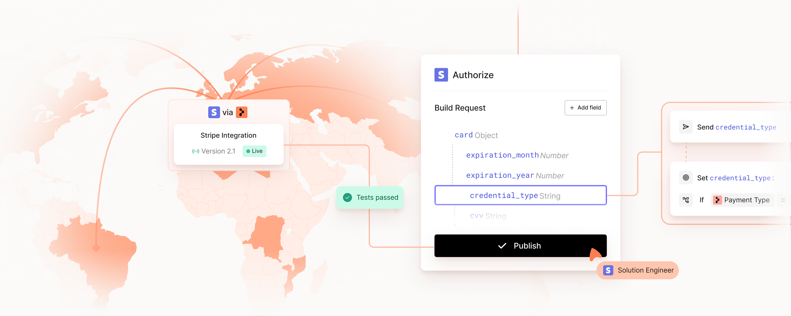
Overview
Primer for Partners is a new platform that lets Partners like Stripe, Worldpay and Checkout.com build and own their Primer integration end-to-end. From building the API logic, to mapping data, testing, going live, and refining post-launch, all without writing a single line of code.
I joined as the sole product designer on the Partners team in May 2025 and have led the experience from MVP through Pilot, ahead of public launch in early 2026.
The problem we faced
For years, Primer was merchant-first. Every integration, processor, and third-party tool was built by Primer's own engineering team. That model worked at small scale, but it capped how fast the platform, and the merchants relying on it, could grow.
Every new partner integration meant another engineering ask: another quirky API to model, another pattern to support. Partners had no way to build new integrations and features on Primer themselves. And merchants couldn't get the ecosystem of tools they wanted at the speed they needed.
The solution
A no-code platform that takes partners from first request to live integration. Partners needed to express something inherently technical without writing a line of code. The challenge was making API definitions feel structured yet simple, while still capturing enough fidelity for real-world quirks. Each API call became an editable object with progressive disclosure of advanced properties, so the surface stays calm until the complexity is needed. What previously took weeks and months of bespoke engineering, a partner can now build themselves in an afternoon.
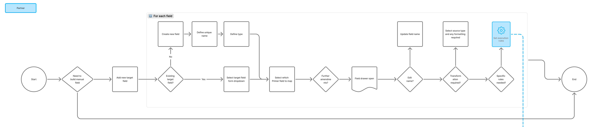
We refined user flows as a team, allowing us to align on the core experience before prototyping in more detail.
Every stage, from configuring endpoints and mapping data, through testing to publishing in the Primer marketplace was shaped through close internal collaboration as well as usability sessions with real partners during the MVP phase.
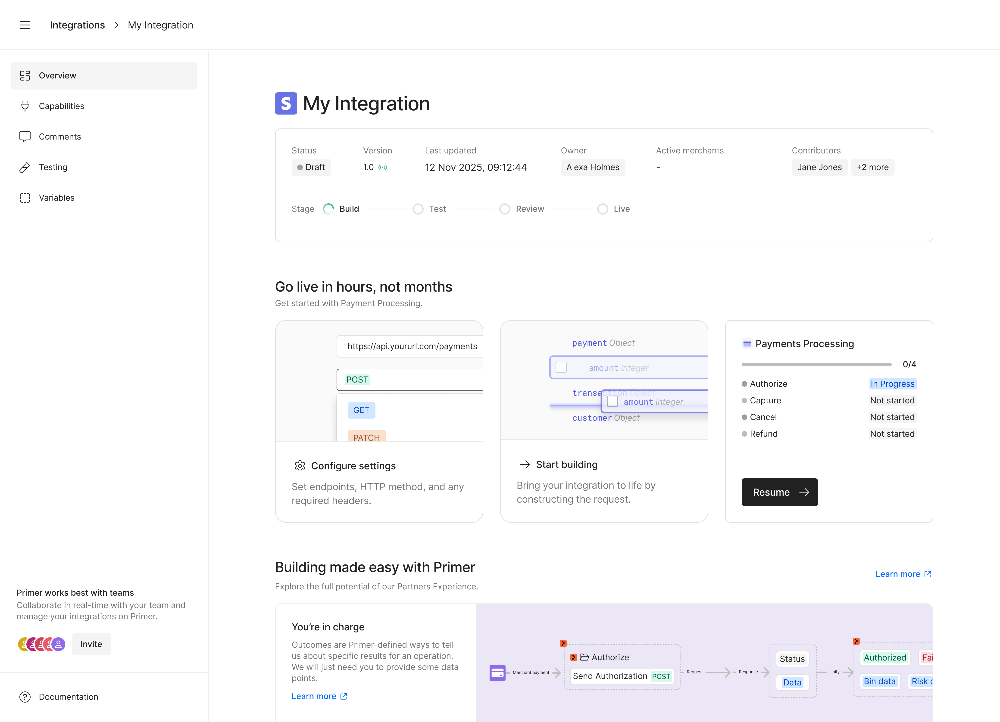
Partners, like Stripe, can now build their integrations on Primer, without writing code
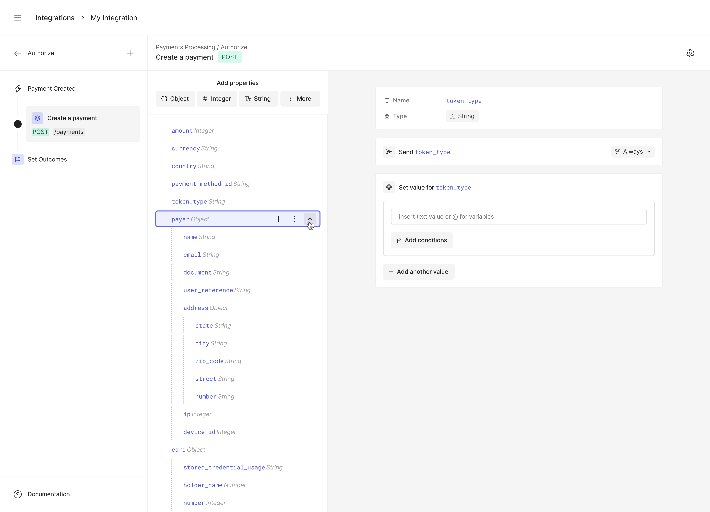
Partners add properties to start building out their integration logic
Mapping data between Primer and Partner
Every integration is a two-way conversation: data from Primer flows into the partner's API, and the response flows back.
During early testing we realised partners needed more clarity around what data they needed to use, so we added descriptions and example data to the Variable Selector, so partners can use the right data in the right field. This meant no more flicking between docs and the builder — all the information needed is in one place.
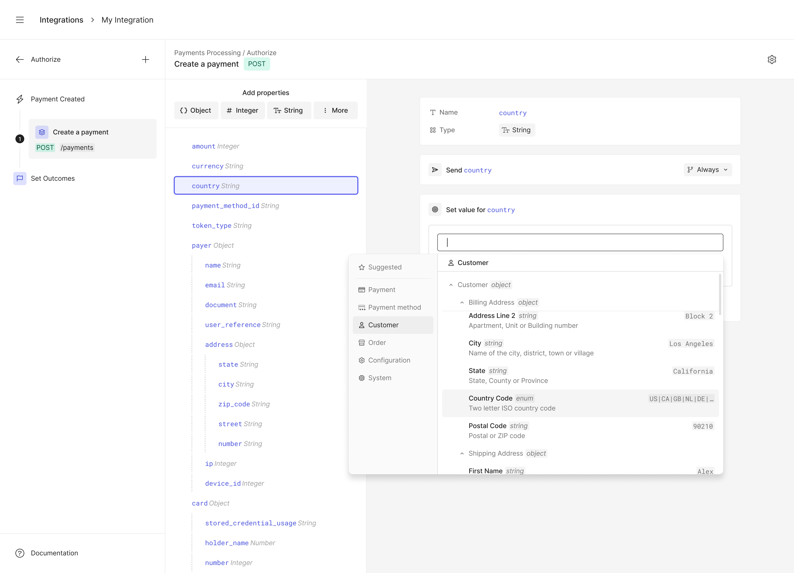
Variable selector to show data available to be mapped in the integration
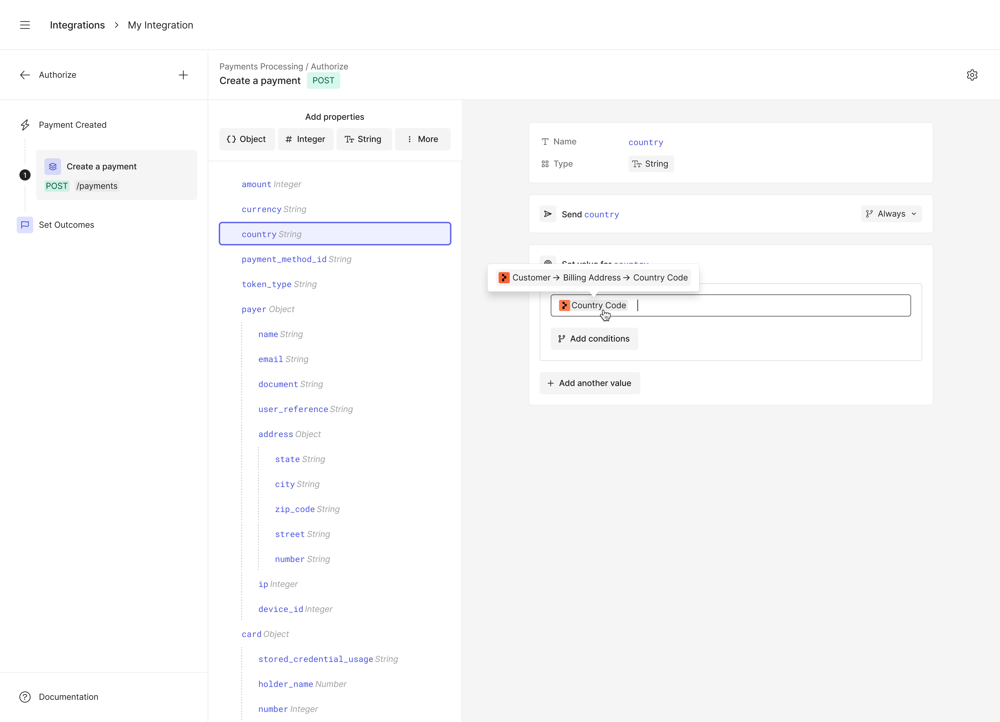
Data mapped to the partners integration properties
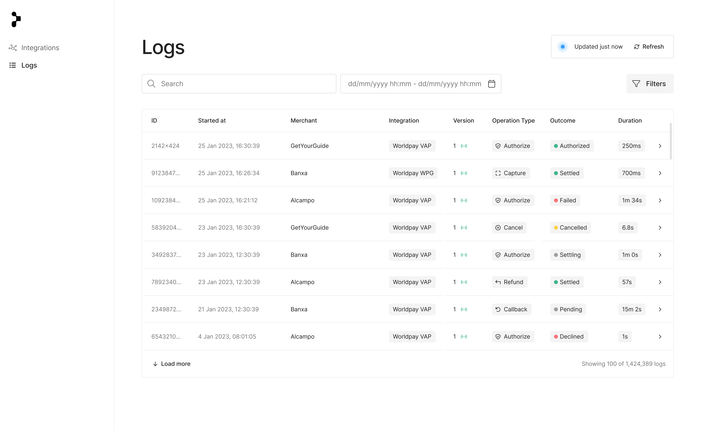
A dedicated logs view shows every payment that's flowed through the integration, with the full request and response one click away.
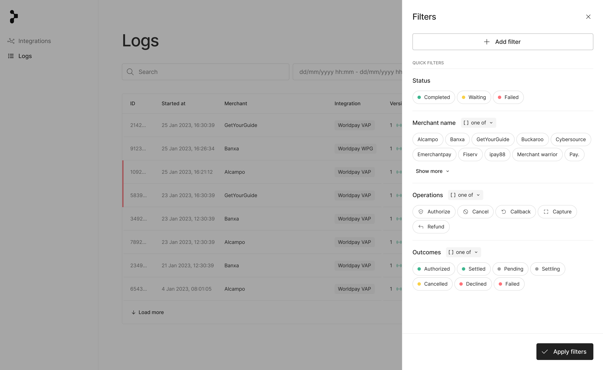
Filters across merchant, status, and time mean partners can drill into a specific issue without leaving the dashboard, turning what would have been a support escalation into a self-serve diagnosis.
Managing complex logic
Real integrations rarely run linearly. Partners build conditional branches for routing and error handling, and as conditions multiplied the canvas became hard to scan. We refined the original condition builder with a collapse/expand pattern that lets partners read the flow at a glance and expand only the branch they're editing. Reordering, copying and pasting conditions also became a single click rather than a manual rebuild.
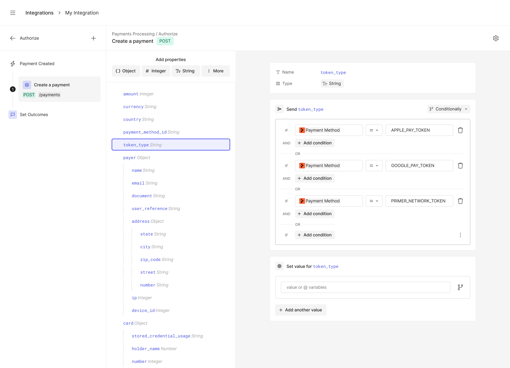
Improving working with conditions by introducing a collapsed and expanded view
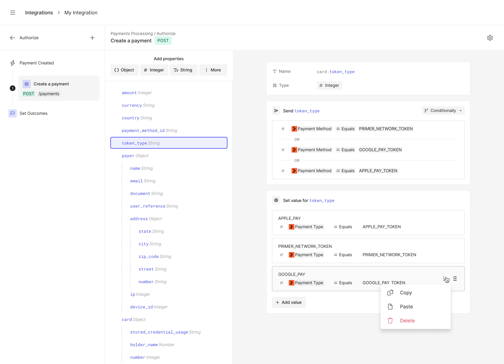
Once collapsed, conditions were easier to re-order, copy and paste
Confidence before going live
Partners shouldn't have to publish an integration to find out it works. After launching the MVP we added a built-in test simulation that runs the integration against test payment data and shows exactly what was sent, what came back, and where any step broke. Partners can catch problems while they're still cheap to fix and quickly iterate.
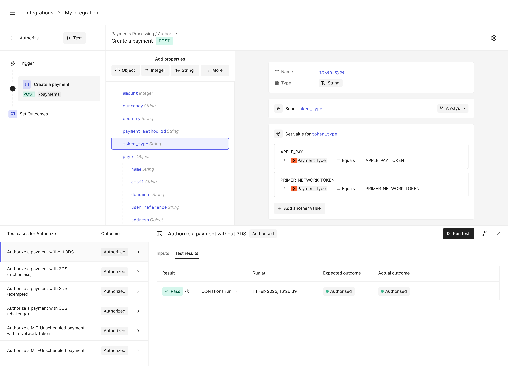
Testing simulation allowed partners to be confident of their build before publishing
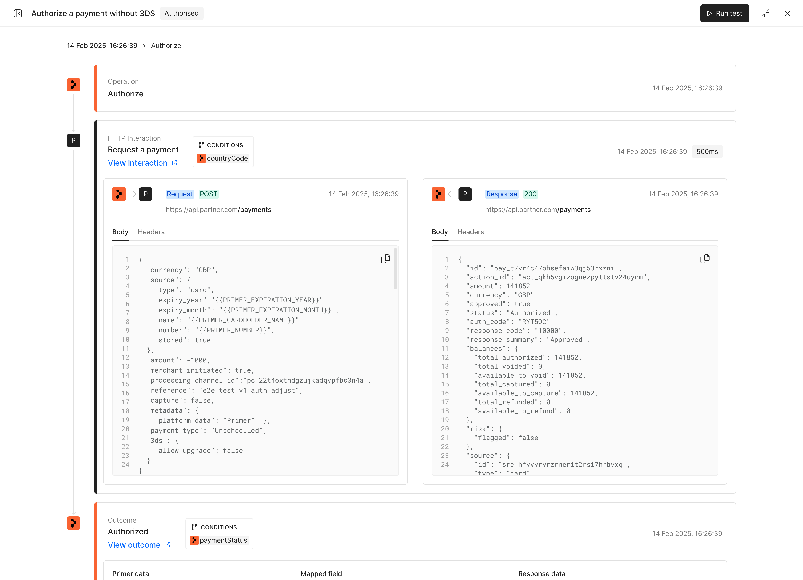
Partners could see test payment data used in the test to confirm their integration was behaving correctly
Publishing and refining over time
When a partner is ready, they submit their integration to the Primer payments marketplace, making it instantly available to every merchant on the platform. Post-launch, we plan to add performance insights — authorisation rates, latency, and error patterns — so the integration stops being a one-off project and becomes something the partner actively tunes against real traffic.
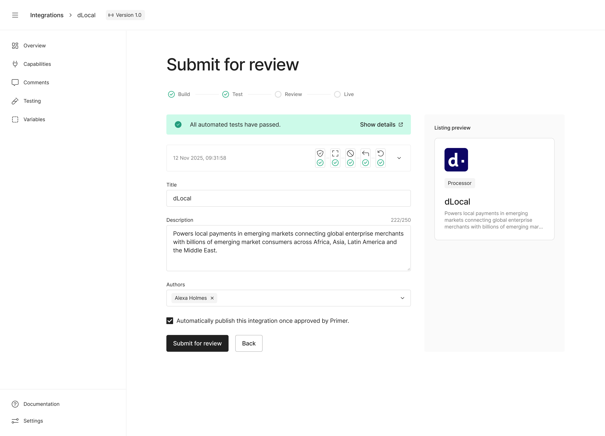
Partners will soon be able to submit their integration onto the Primer payments marketplace
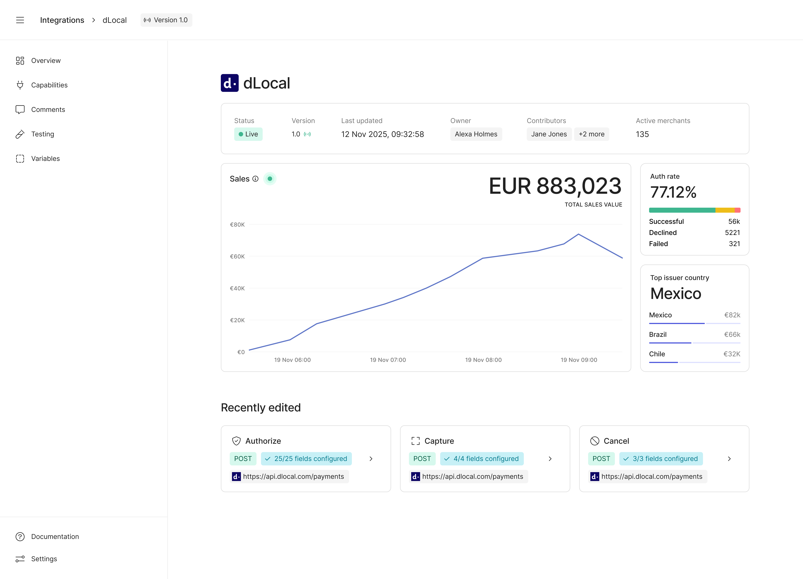
Insights on integration performance will help partners refine their integrations
Where things stand today
The platform is scaling on track to exceed its 2026 goal of 50+ partners live on Primer for Partners, with more integrations launching as the team grows.
The work is still very much in flight. Each new partner brings fresh edge cases that shape the next iteration, and the team is now turning attention to wider partner needs, performance insights chief among them, helping partners not just ship an integration, but continuously tune it against real traffic.